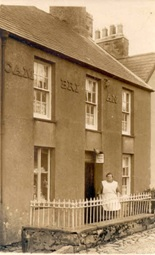

Siop Cambrian
Yn 1881, roedd William Williams, gwneuthurwr esgidiau, yn byw yn Cambrian. Yno hefyd fel lojar oedd William Owens o Dalybont, Ceredigion oedd yn gurad yn y pentref. Yn 1901, John Parry, clerigwr eglwysig, oedd yn byw yn Cambrian. Yn ddiweddarach yn y degawd John a Dora Jones oedd y perchnogion (gynt o’r Fron a’r Hafod). Yn y 1940au tad William Griffith, gŵr Mari Fron, oedd yn berchen arno.
O flaen siop Cambrian ar ddechrau’r ugeinfed ganrif. Cyn 1910, Dora Jones oedd y perchennog.